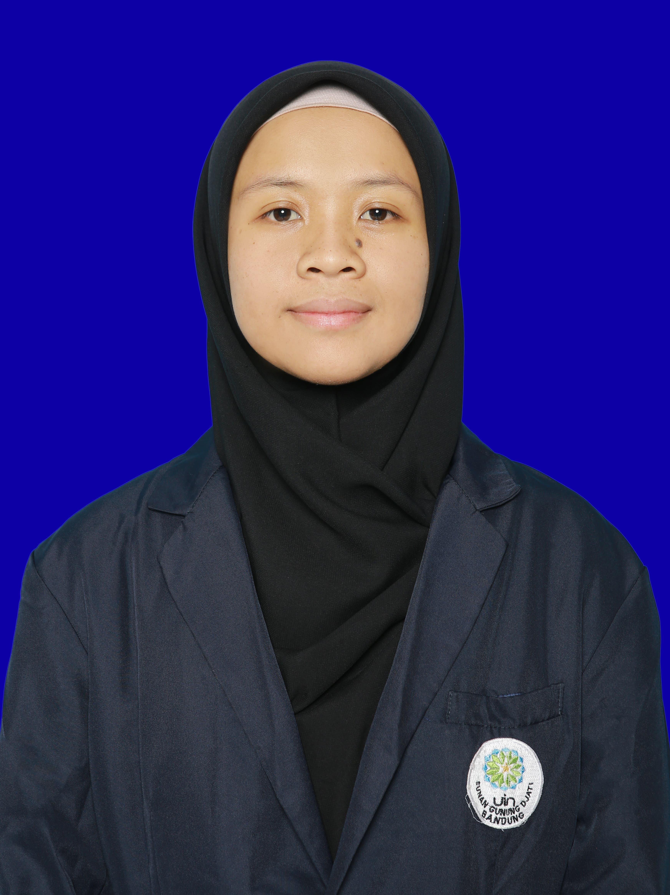

Fullstack developer with a passion for problem-solving, clean systems, and meaningful tech. Building bridges between code and human experience.

Hello! I'm Arih Adilah Hasan, a freshly minted Informatics Engineering graduate from UIN Sunan Gunung Djati Bandung (Class of 2025).
I thrive at the intersection of technical development and human-centered thinking — whether that's writing clean backend code, crafting intuitive user flows, or coordinating cross-functional teams.
My experience spans fullstack development, NLP research, product internships, and active organizational leadership. I believe great software comes from understanding people first.
I'm open to new opportunities — whether it's a full-time role, freelance project, or just a conversation about tech. Don't hesitate to reach out!